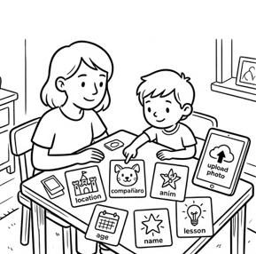
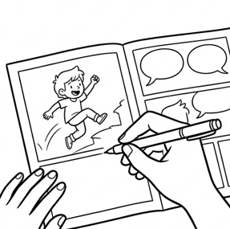
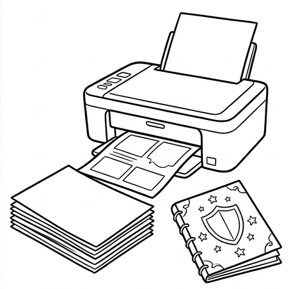
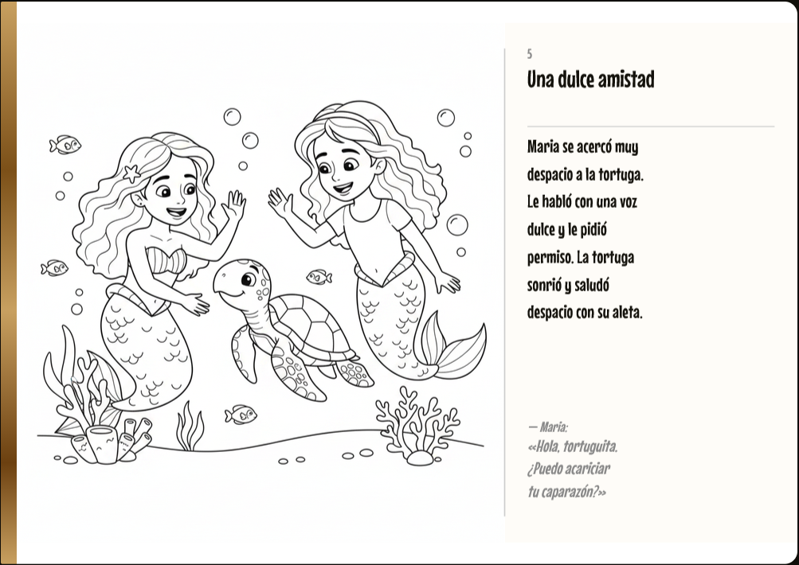
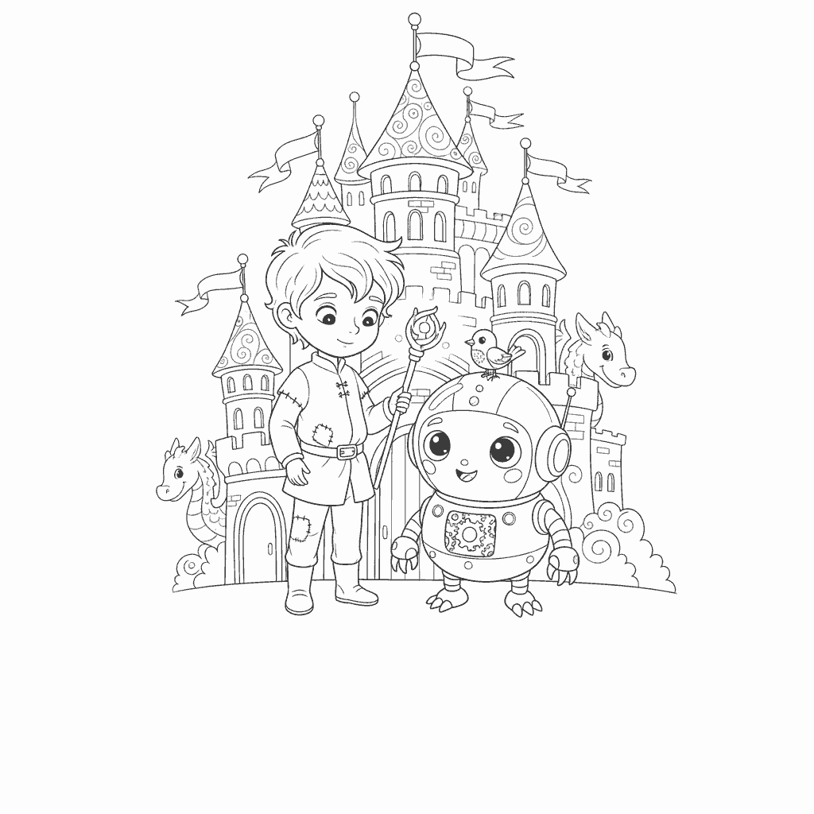
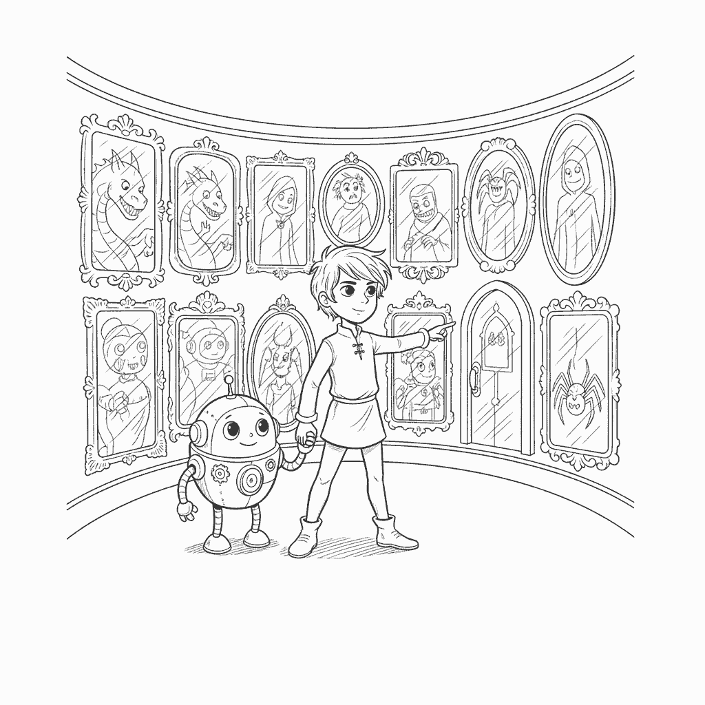

Case study · Producto propio
StoryPrints
Un cuento infantil personalizado, ilustrado por IA y listo para imprimir y colorear.
El hueco entre una imprenta y una ventana de chat
Un libro para colorear de tienda es genérico por definición: el protagonista nunca es tu hija.
Las alternativas personalizadas que existen son libros impresos por encargo: caros, con semanas de espera y una sola tirada. En el otro extremo, un chat de IA puede escribirte un cuento, pero lo que devuelve es texto en una ventana. No es un libro. No tiene portada, no se imprime, no se colorea, no se queda en la estantería.
El hueco estaba en el medio: un producto que convierta ocho respuestas de un padre en un objeto físico en dos minutos, por el precio de una suscripción y no de una imprenta.
Eso impone tres restricciones que decidieron casi todo el diseño técnico:
- El artefacto final es un PDF A4, no una pantalla. Todo lo que se genera tiene que sobrevivir a una impresora doméstica.
- El público son niños de 3 a 12 años. Contenido que no ha vetado nadie no puede llegar a una página impresa.
- Cada libro cuesta dinero real en llamadas a modelos. La economía del producto tenía que estar en el código desde el principio, no como una capa añadida después.
Ocho preguntas, no un prompt
La primera decisión de producto fue no exponer un campo de texto libre. Un padre no quiere escribir un prompt; quiere contestar preguntas con su hija al lado. El wizard pregunta nombre, edad, escenario, acompañante, valor de la historia, identidad, extensión y estilo narrativo — y cada respuesta es una tarjeta, no un input.



Ese StoryConfig validado es el único contrato que entra en el pipeline. Nada aguas abajo vuelve a preguntarle nada al navegador.
El pipeline de generación
Wizard → StoryConfig (validado)
│
▼
Narrative Engine (Claude) → escenas + briefs de ilustración
│
▼
Content Safety → aprueba / regenera la escena marcada
│
▼
Illustration Engine (OpenRouter) → PNG por escena + portada → Storage
│
▼
Delivery → fila `stories` (texto + config + imágenes)
El PDF no está en el pipeline. Se compone bajo demanda desde el cuento ya guardado, para que una generación nunca se bloquee esperando a la maquetación.
Una cola, y un cron que la rescata
Las generaciones tardan minutos y cuestan dinero, así que van a una cola (BullMQ sobre Upstash Redis) con progreso hacia el navegador. Se drena por dos vías: en proceso justo después de responder, y un cron cada 5 minutos contra /api/worker. El cron no es redundancia decorativa: es lo único que hace que una cola atascada se arregle sola. Y el endpoint falla cerrado si no hay CRON_SECRET, porque cada llamada gasta dinero en modelos.
Las ilustraciones no pueden llevar texto
Son páginas para colorear: una letra horneada en el bitmap no se quita, y la página se imprime tal cual. El modelo de imagen se llama por chat completion, sin campo de negative prompt — así que todo viaja dentro del texto: la instrucción se repite de tres formas distintas y el diálogo entrecomillado se elimina de la escena antes de que el modelo la vea. Las comillas son la señal más fuerte para que un modelo de imagen dibuje letras.
Es mitigación a nivel de prompt, no una garantía: nada inspecciona la imagen que vuelve. Verificarlo de verdad exigiría un pase de OCR o de visión por ilustración. En la documentación del proyecto está dicho exactamente así.
La economía va en el código
Cada imagen se paga en créditos. El plan compra una asignación mensual que caduca al cerrar el periodo — una asignación que se acumula no es una asignación. Y hay un detalle que sólo aparece cuando el producto lleva un mes vivo: durante un tiempo el webhook de suscripción escribía el plan y nada más, así que un suscriptor tenía cero créditos y recibía los mismos dibujos genéricos que el plan gratuito. grantPlanCredits() corre ahora en la creación, la actualización y cada pago mensual — idempotente por descripción, porque Lemon Squeezy reintenta los webhooks, con un índice único en Postgres que lo hace cumplir de verdad.
De la landing al PDF, construido por una persona

- Wizard de creación de ocho pasos, con subida opcional de una foto del niño para que el personaje se le parezca — con consentimiento explícito, fuera del
storyConfigy nunca escrita en la columnaconfigdel cuento. - Motor narrativo sobre Claude: escenas ajustadas a la edad, diálogos, moraleja y briefs de ilustración por escena. Extensiones de 6 a 18 páginas, derivadas del número de escenas y nunca escritas a mano.
- Motor de ilustración sobre OpenRouter: línea negra sobre blanco, coherente entre escenas, subida a Supabase Storage.
- Filtro de contenido que se aplica tanto al texto que devuelve el modelo como al único campo libre del producto (el escenario personalizado de los planes de pago), antes de que ningún modelo lo vea.
- Lector web en SVG y exportación a PDF con pdfkit (A4 apaisado): portada, una página por escena, moraleja y página de QR de referido.
- Cuatro planes con límites, créditos, series de capítulos, valoraciones y marca de agua — leídos desde una única tabla de límites que los tests mantienen sincronizada con la página de precios.
- Share card propia, compuesta en el navegador: no es una página del PDF recortada, sino una composición aparte con portada, título, destinatario y enlace de referido.
- Panel de admin y suscripciones completas con Lemon Squeezy: checkout, webhooks, portal de cliente y cambios de plan.


Dos decisiones de negocio deliberadas
El plan gratuito entrega un libro completo e imprimible. Retener el PDF dejaría al plan gratis sin nada por lo que juzgar el producto; lo que quita la suscripción es la marca de agua.
El primer cuento de cada usuario lleva ilustración de IA de verdad, sea cual sea su plan. Si no, el único libro por el que un visitante juzga el producto se renderiza con seis SVG genéricos: sin nada de la personalización por la que se le está pidiendo pagar. Un registro cuesta una llamada de imagen. Es publicidad barata.
Construido y desplegado. Todavía sin validar
No hay métricas de usuarios, conversión ni ingresos que reportar, y prefiero no inventarlas.
Lo que sí se puede afirmar hoy:
- El circuito completo funciona en producción: de las ocho respuestas del wizard al PDF descargable, con pagos y suscripciones activas.
- Los tests cubren lo que rompe caro y en silencio: límites de plan, créditos y su idempotencia, seguridad de contenido, extensiones de historia, composición del PDF, autenticación del worker, caducidad de sesión y la share card.
- Los invariantes del negocio están bloqueados por tests, no por disciplina. La tabla de límites y la página de precios no pueden divergir: hay un test que falla si lo hacen.
- La cola se autocorrige en lugar de quedarse colgada hasta que otro usuario la empuje.
Lo que queda por validar es lo importante: si un padre paga 6,99 € al mes por esto.
- Landing completa en escritorio (hero + “Cómo funciona” + precios)
- Un paso del wizard con las tarjetas de selección
- Pantalla de progreso de generación
- Dashboard “Mi biblioteca” con varios cuentos
- PDF abierto en un visor, o foto del libro impreso y coloreado
Lo que me llevo
Un flag que ninguna ruta lee no es un límite: es un comentario que lo parece
La tabla de planes existía mucho antes de que las rutas la consultaran. El bug de los créditos —un suscriptor recibiendo los mismos dibujos que el plan gratis— no fue un error de código: fue una configuración que nadie ejecutaba. Ahora cada límite tiene una ruta que lo lee y un test que lo prueba.
Con IA generativa, el fallo silencioso es el caro
Una ilustración con letras horneadas dentro no lanza ninguna excepción: llega al PDF, se imprime, y el cliente la ve. El código que más valor aporta en este producto no es el que llama al modelo, sino el que decide qué se le manda y qué se hace cuando devuelve algo inservible.
Los detalles de impresión no perdonan
pdfkit añade una página en silencio cuando un texto empieza por debajo del margen inferior. Media tarde de depuración para descubrir que un pie de página movido dos puntos duplicaba páginas del libro. Toda la maquetación pasa hoy una altura explícita: el texto se recorta antes que desbordarse.
Lo que haría distinto
Validar la disposición a pagar antes de construir cuatro planes. La arquitectura de suscripción está bien hecha y todavía no sé si el precio es el correcto — es el orden inverso al que recomendaría.
¿Lo probamos?
El primer cuento es gratis y sale completo, con su PDF listo para imprimir.
Ver StoryPrints RBT Studio · ricardboixeda@gmail.com